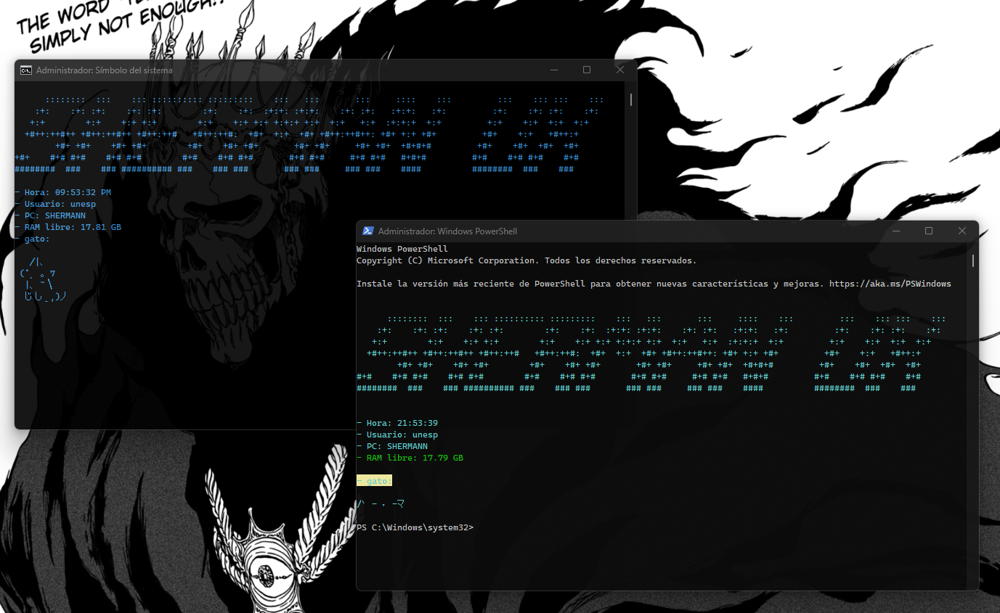
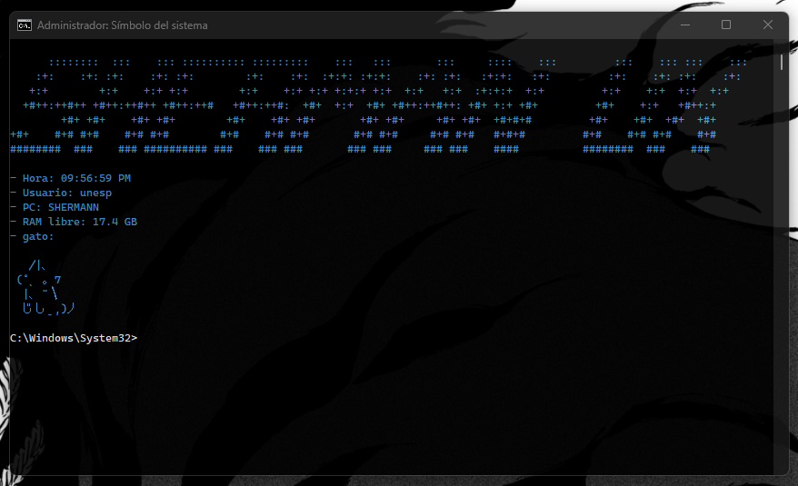

Terminado
Terminales Personalizadas para PowerShell y CMD
Descripción del Proyecto
Este proyecto consiste en una personalización profunda de las terminales de PowerShell y CMD, integrando estilo visual, detección inteligente del entorno y una marca personal con arte ASCII y frases adaptables.
Los scripts cuentan con detección automática de entornos como Visual Studio para evitar ejecuciones no deseadas, además de mostrar la hora actual, tu apodo personalizado y un simpático gato como firma visual. Todo esto se combina con un entorno amigable, práctico y estético para el día a día.
“Se ve clean. -German
Galería del Proyecto



Tecnologías Utilizadas
- PowerShell Scripting (`.ps1`)
- CMD Scripting clásico (`.cmd`)
- Detección de entorno (Visual Studio)
- Impresión dinámica de hora
- Arte ASCII personalizado